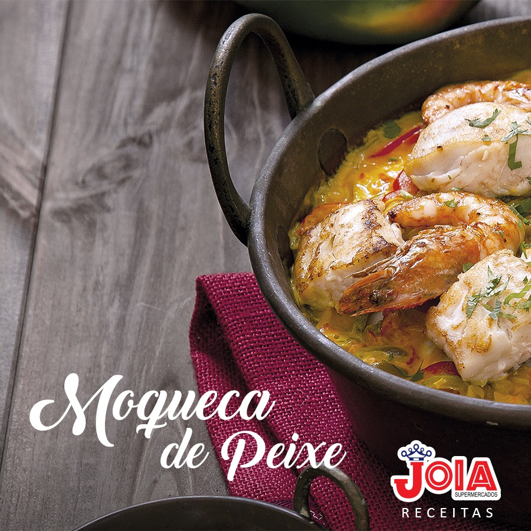

Moqueca de Peixe
Ingredientes:

☑ Limão: 1 unidade
☑ Sal: 1 colher de chá
☑ Cebola grande fatiada: 1 unidade
☑ Pimentão amarelo fatiado: 1 unidade
☑ Pimentão vermelho fatiado: 1 unidade
☑ Tomates fatiados: 2 unidades
☑ Leite de coco: 200 ml
☑ Azeite de dendê: 1 colher de sopa
☑ Coentro picado: 3 colheres de sopa
Modo de preparo
☑ Tempere as postas de peixe com o sal e o suco de limão. Espalhe bem e reserve.
☑ Em uma panela de ferro ou barro média faça uma camada com metade da cebola, dos tomates e dos pimentões.
☑ Por cima, coloque as postas do peixe, salpique metade da coentro, cubra com o restante da cebola, tomate e pimentões. Acrescente o caldo de limão da marinara, o leite de coco e o azeite dendê.
☑ Leve a panela ao fogo alto até ferver com a panela tampada, quando levantar fervura abaixe o fogo e cozinhe por aproximadamente 15 minutos, ou até que o peixe fique macio ao toque do garfo.
☑ Desligue o fogo e salpique o restante do coentro. Sirva em seguida com farofa de banana e arroz.